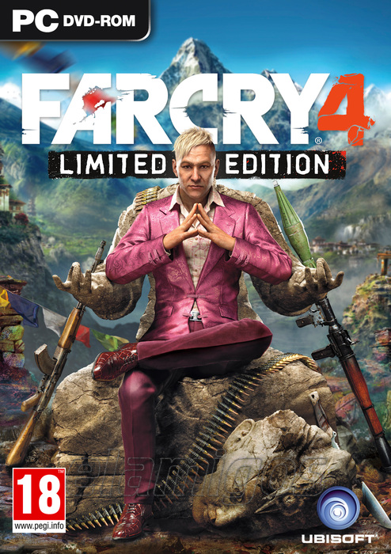

Far Cry 4 30.6 GB
Género: FPS
Oculto en la recóndita cordillera del Himalaya se encuentra Kyrat, un país
anclado en la tradición y la violencia. Eres Ajay Ghale. Viajarás a Kyrat para
cumplir con el último deseo de tu madre, pero una vez allí te verás atrapado
en una guerra civil desatada para acabar con el régimen opresivo del dictador
Pagan Min.
.